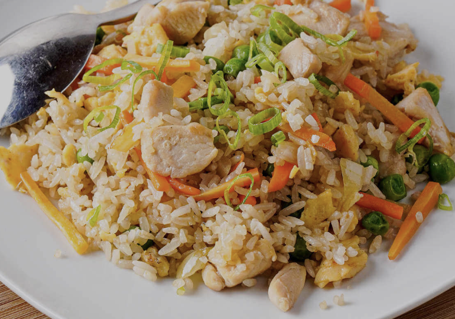

Fried Rice

Description
Fried rice is a flavorful and versatile dish made by stir-frying
cooked rice with vegetables, eggs, and seasonings.
It’s a perfect way to use up leftover rice and can be customized
with your favorite ingredients like chicken, shrimp, or tofu.
This simple recipe gives you a quick, tasty, and satisfying meal
in under 20 minutes — perfect for a weekday lunch or dinner.
Ingredients
- 2 cups cooked rice (preferably cold)
- 2 tablespoons oil
- 2 eggs, lightly beaten
- 1 cup mixed vegetables (carrots, peas, corn)
- 2 tablespoons soy sauce
- 1 teaspoon sesame oil (optional)
- Salt and pepper to taste
- Spring onions for garnish
Steps
- Heat oil in a large pan or wok over medium-high heat.
- Scramble the eggs and set them aside.
- Add a bit more oil and sauté the vegetables until tender.
- Add the cooked rice and stir-fry for a few minutes.
- Mix in the soy sauce, sesame oil, and scrambled eggs.
- Season with salt and pepper, then garnish with spring onions
before serving.
Back to Home